Wählen Sie Ihre Sprache:
Deutsch ▾
Deutsch
Українська
English
العربية
Türkçe
Български
فارسی
Bosanski
Македонски
Polski
Română
Italiano
हिन्दी
Allgemeine 300 Fragen
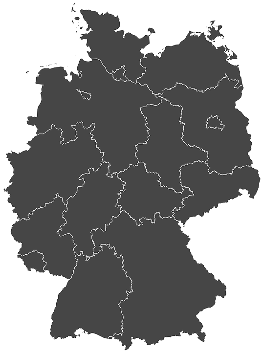
Fragen nach Bundesland
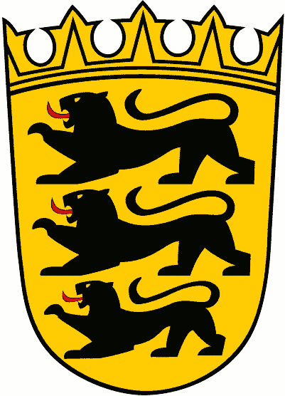
Baden-Württemberg
Bayern
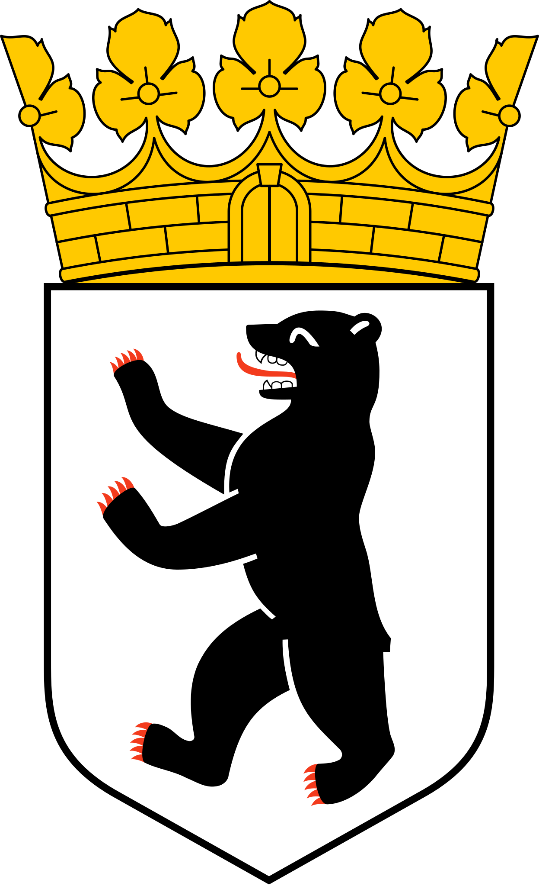
Berlin
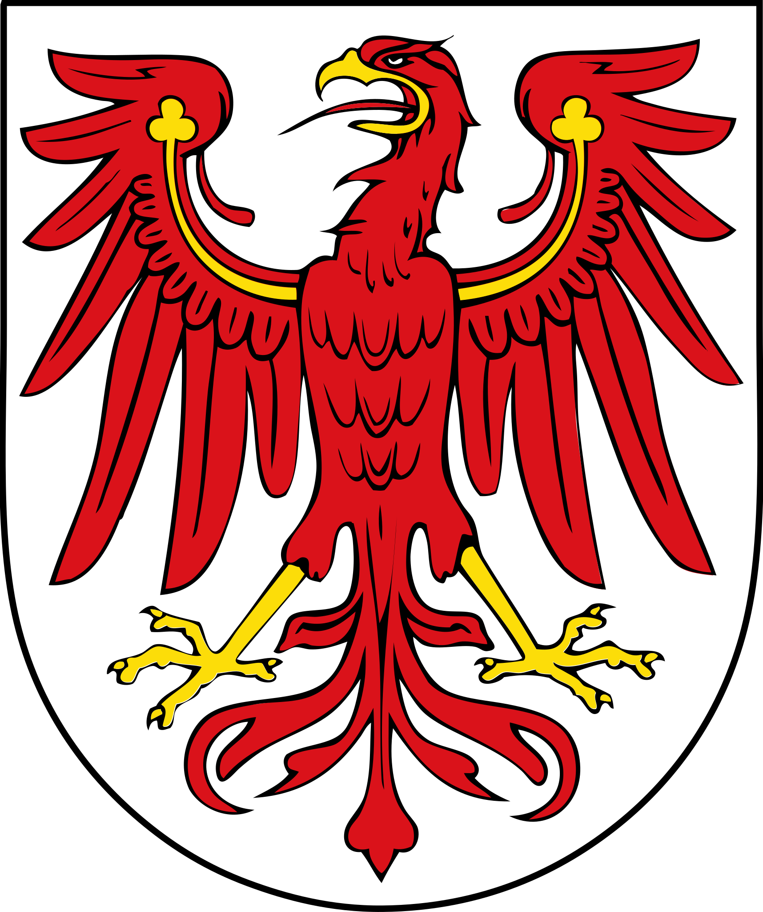
Brandenburg
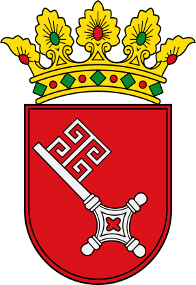
Bremen
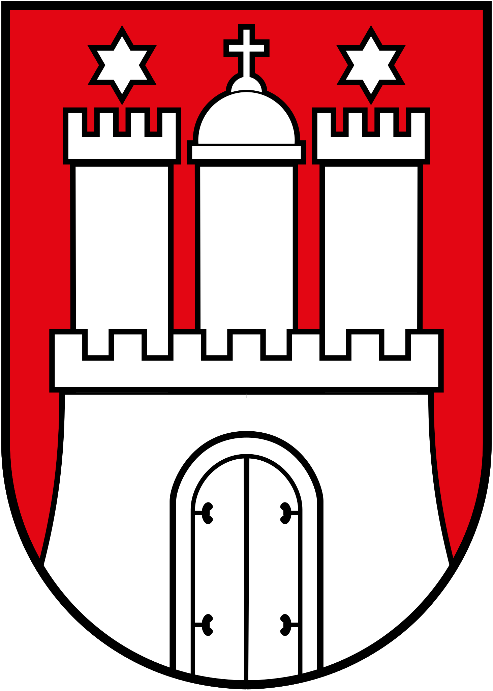
Hamburg
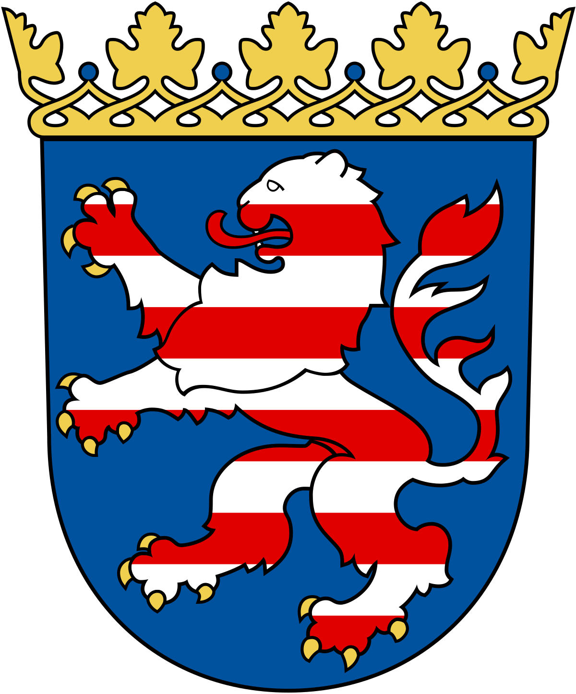
Hessen
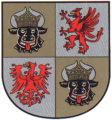
Mecklenburg-Vorpommern
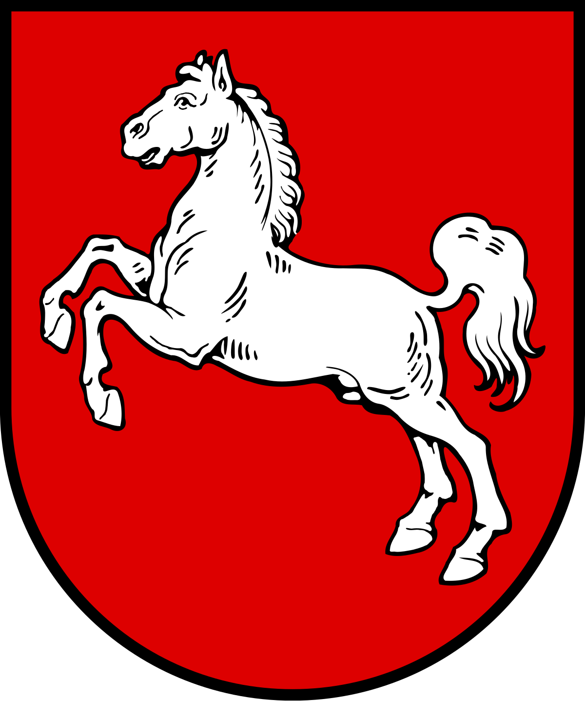
Niedersachsen
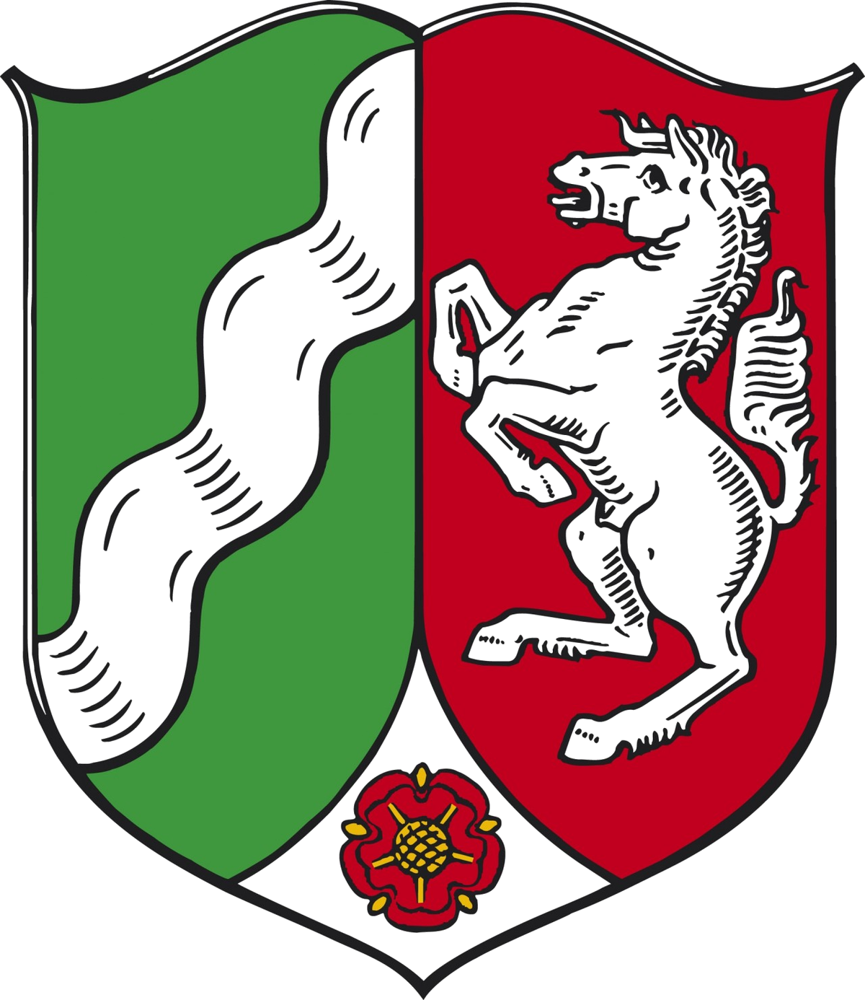
Nordrhein-Westfalen
Rheinland-Pfalz
Saarland
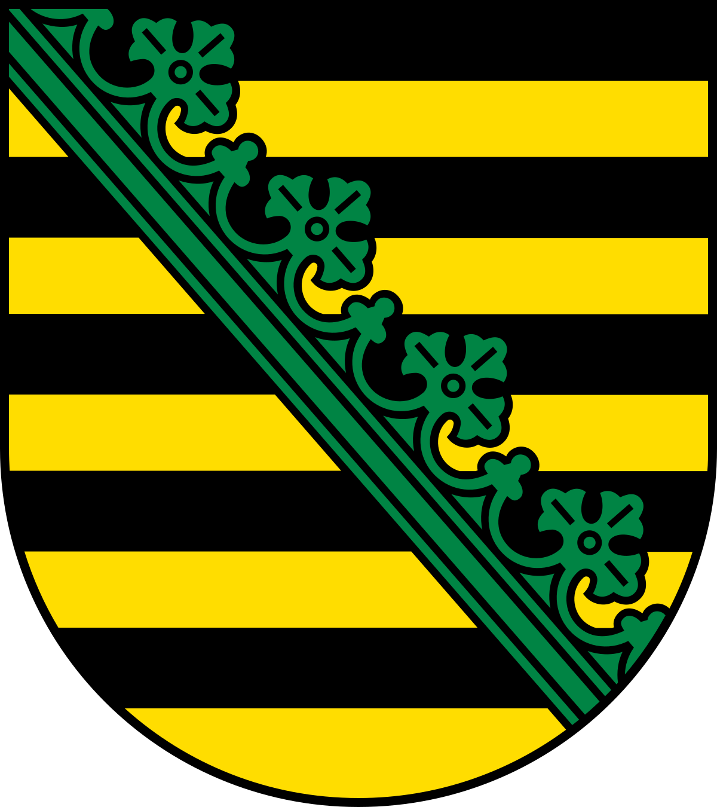
Sachsen
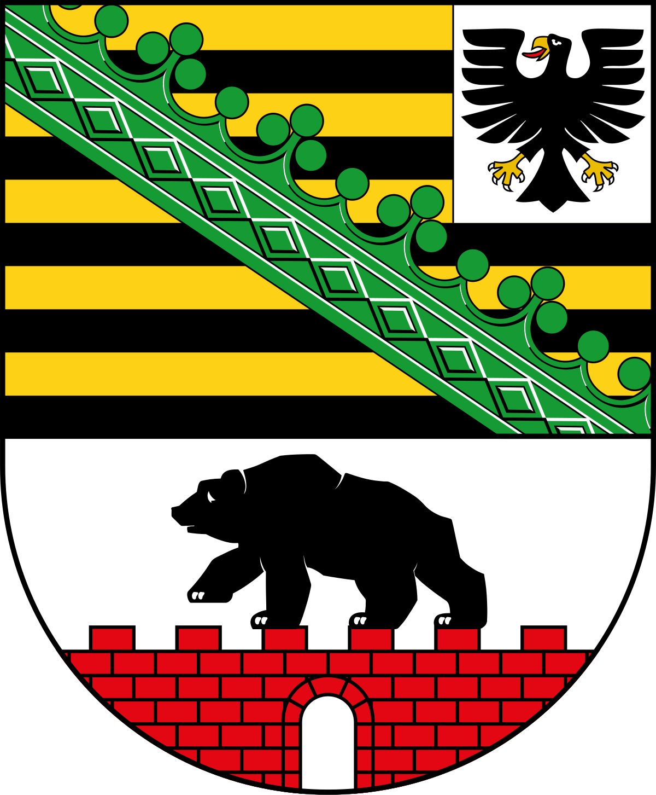
Sachsen-Anhalt
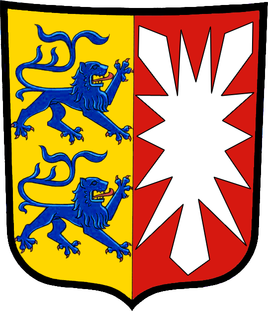
Schleswig-Holstein
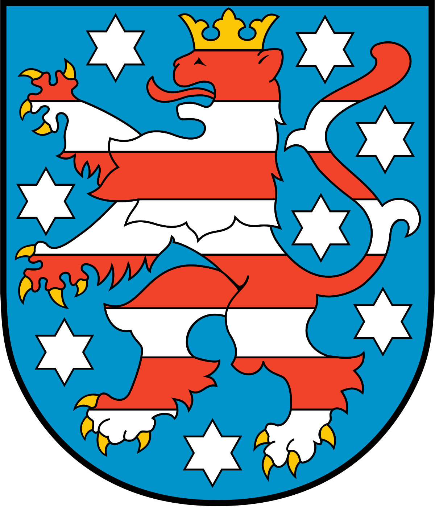
Thüringen
Test Simulation


 Test Simulation
Test Simulation
Test Simulation
Test Simulation